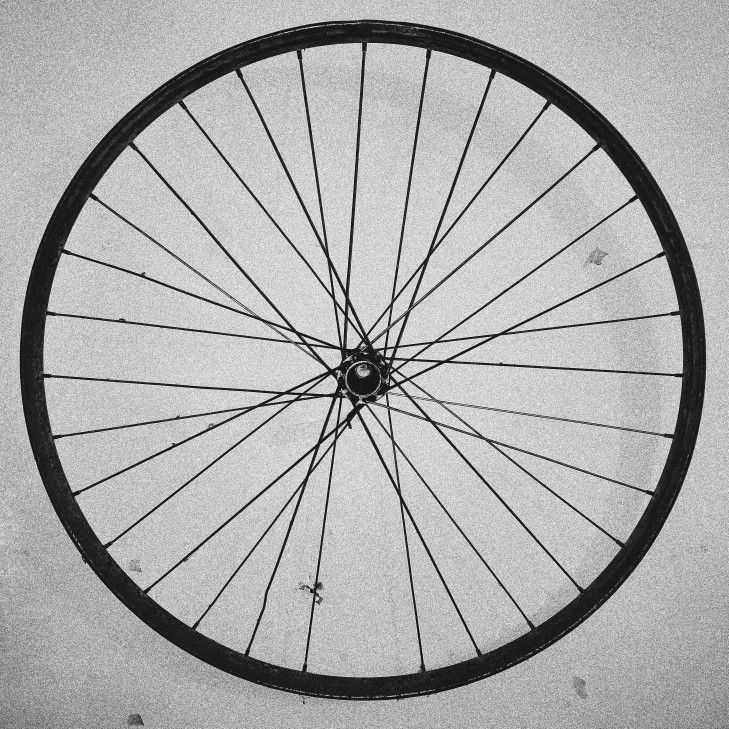

Calculator
Tyre and rim fit
Verdict
Fits
This rim takes 27 to 41 mm tyres.
A 32 mm tyre sits in the middle of the range.
Bead seat diameters
The second number in a size like 28-622 is the bead seat diameter. Tyre and rim must match it exactly.
9 sizes
- 622700C · 29" · 28" (Dutch)Road, gravel, hybrid, 29er mountain bikes
- 584650B · 27.5"Mountain bikes, some gravel and touring bikes
- 55926" (mountain bike)Older mountain bikes, touring, cargo
- 571650C · 26 × 1"Small road and triathlon frames
- 590650A · 26 × 1 3/8"Older roadsters and shopping bikes
- 63027 × 1 1/4"Road bikes before about 1985
- 40620" (BMX and folding)BMX, folding bikes, cargo front wheels
- 34916 × 1 3/8"Folding bikes with small wheels
- 30516 × 1.75"Children's bikes
No size matches that. Try the ISO number, like 584.
Reading a sidewall
28-622 means
- 28 mm wide when fitted to a 19 mm rim
- 622 mm across the bead seat
- Old markings like 700 × 28C say the same thing less exactly
The fit range is a workshop guide: 1.4 to 2.2 times the inner rim width. Check the limits printed on your tyre and rim.
